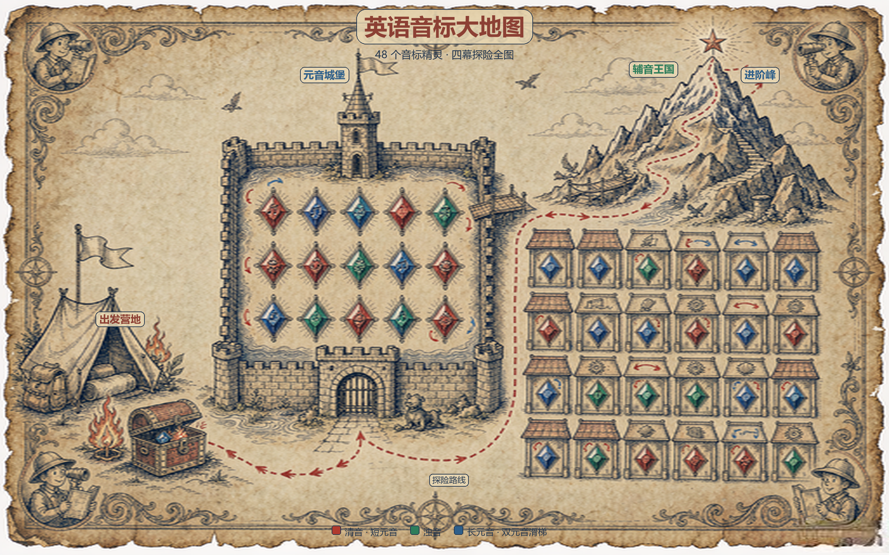
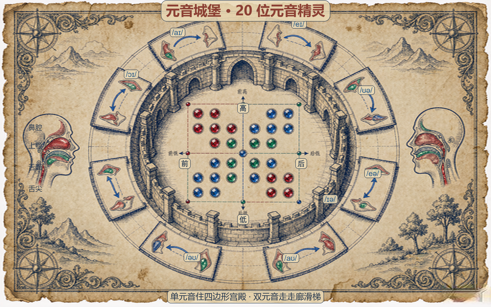
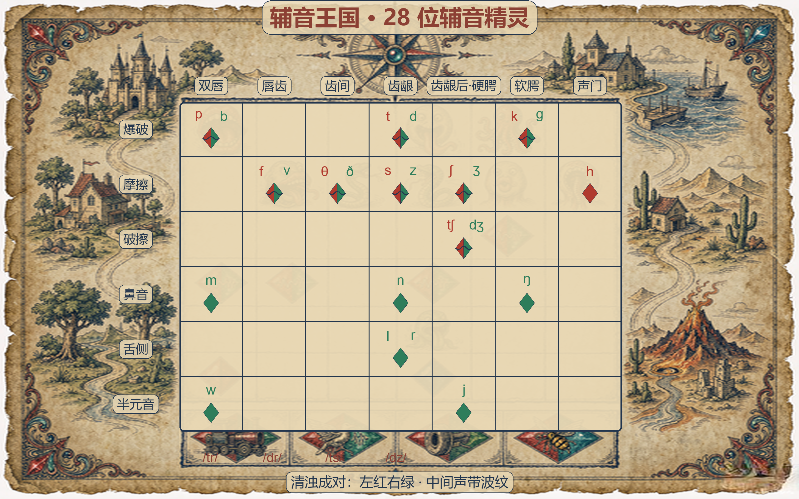
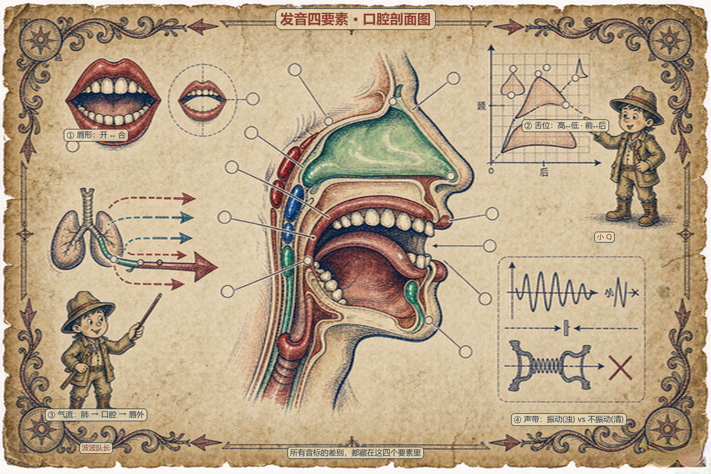

A1 英语音标大地图
四幕世界全景：出发营地 / 元音城堡 / 辅音王国 / 进阶峰；48 个宝藏格精确分区（城堡 20 + 王国 28），暗红虚线路径串联，三宝石语义色。

A2 元音城堡分区图
圆形大厅内嵌元音四边形舌位坐标图（前后 × 高低），20 个元音格按坐标落位，外围 8 个双元音滑梯格。

A3 辅音王国分区图
7 部位 × 6 方法矩阵，28 个辅音格落位于交叉点；六家族街区城镇俯瞰；清浊成对格左红右绿 + 声带波纹分隔。

F 口腔剖面总图
发音机理四要素：舌位宝石色填充 + 唇形 + 气流箭头 + 声带（振动波纹 / 叉号），配双探险家讲解角色。

方形播客封面
中心圆形徽章预留位 + 微缩探险地图 + 罗盘 / 卷草纹 / 四角双角色；构图紧凑居中。